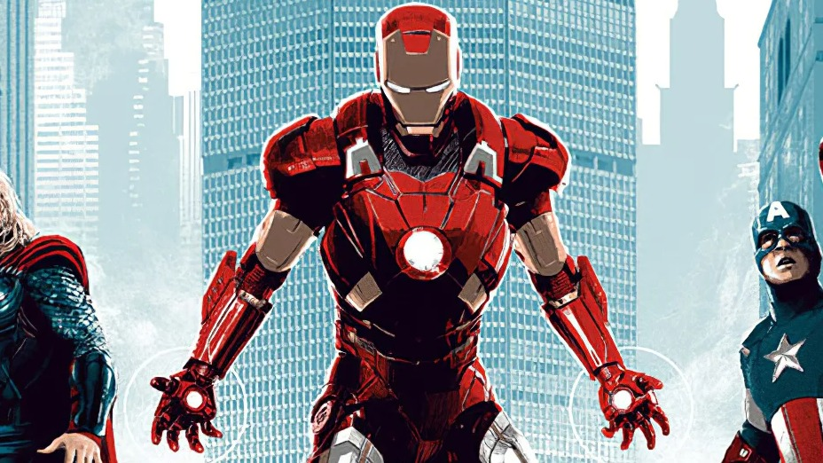
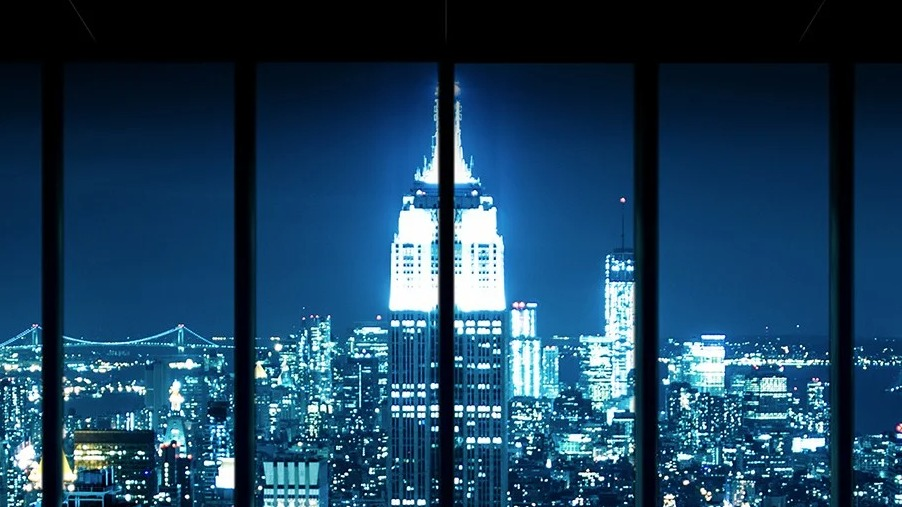
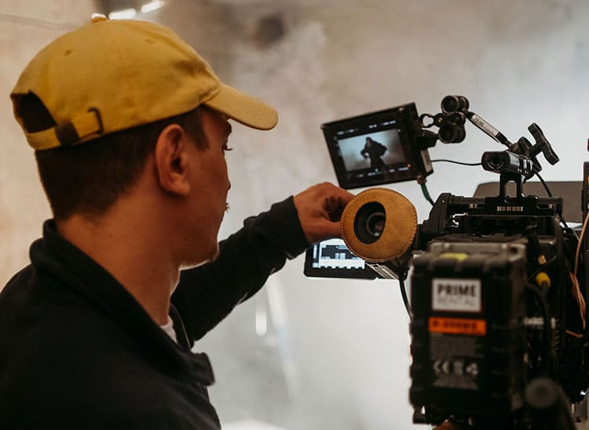

Sinopsis
"Los Vengadores" es una película que junta a varios superhéroes conocidos para enfrentar una amenaza muy
grande.
La historia trata sobre cómo aprenden a trabajar en equipo para salvar al mundo.
Es una película emocionante con muchas peleas, explosiones y momentos graciosos.
Personalmente, creo que fue una de las películas más importantes del cine de superhéroes porque mostró que se
podían juntar varios personajes en una sola historia de forma divertida y épica.

Localizacion de la pelicula
La película fue filmada en varias locaciones reales, como la ciudad de Nueva York, donde se pueden ver muchas
escenas de acción en las calles, con autos explotando,
edificios destruyéndose y los superhéroes peleando contra los enemigos. También usaron lugares como Cleveland
para simular partes de Nueva York.
Además, muchas escenas fueron grabadas en estudios con pantallas verdes para poder agregar los efectos
especiales después, como las naves voladoras y las ciudades destruidas por computadora.
Esto ayudó a que la película se viera muy realista y espectacular.

Produccion
El director de la película fue Joss Whedon, que también escribió el guion.
Él ya era conocido por hacer series de televisión antes de esta película. Marvel Studios fue la productora
encargada,
y con esta película lograron unir a varios personajes famosos del universo Marvel en una sola historia. Gracias
a su éxito,
se hicieron muchas más películas después, formando lo que hoy se conoce como el Universo Cinematográfico de
Marvel, que es uno de los más grandes y populares del cine actual.
